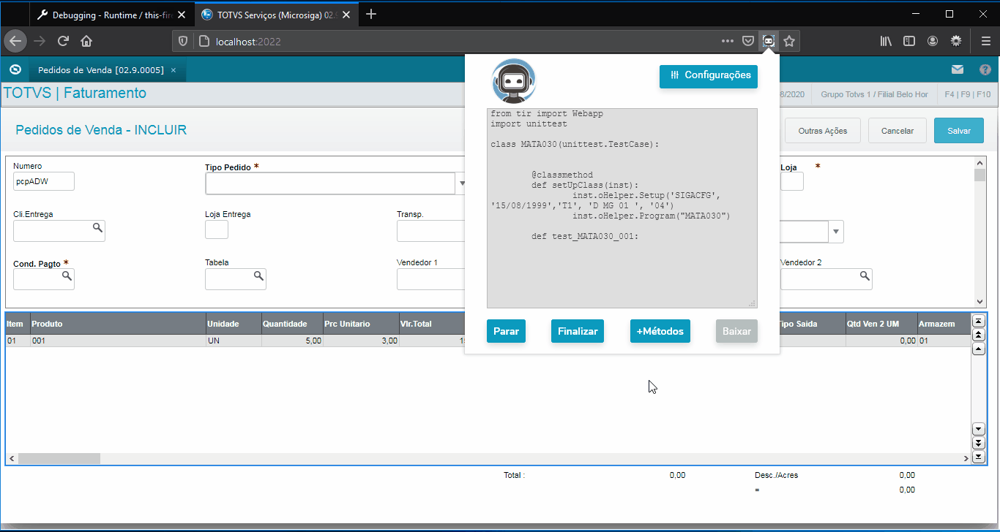

TIR RECORD PROTHEUS 1.0.0
- Esse gravador tem como objetivo capturar ações que o usuário realiza no Protheus WebApp (Smartclient+HTML) e transformar essas ações em um script para o framework TIR.
Nota
Cada ação é gravada, por isso, leia com atenção cada tópico e utilize os recursos da ferramenta para uma melhor experiência.
Instalação
Como instalar no Firefox:
Na versão atual, a extensão será distribuida através da loja do Firefox.
SetupClass
Após instalar configure o método "SetupClass" do TIR:
SetupClass é um método que é executado antes de todos os outros casos de testes. Mais informações....
- No TIR Record para o SetupClass você precisa informar os métodos:
- Método Setup: contendo as informações dos campos Programa Inicial, Database, Grupo, Filial e Ambiente.
-
Método Program: contendo as informações para o preenchimento do campo que pesquisa a rotina/programa.
Criação
Agora crie os arquivos e comece a gravar as ações:
Após realizar as configurações iniciais (configurar o método SetupClass), iremos criar os scripts:
Aviso
Lembre-se que o TIR realiza grande parte das ações iniciais para entrar no ambiente então considere os métodos "Setup" e "Program" para o ponto de partida na hora da gravação.
- Clique no icone do TIR Record.
- Clique em criar.
- Informe o nome dos script de teste.
- Informe o nome do primeiro caso de teste.

Parar gravação
Clique no botão "Parar" para que ações indesejadas não sejam gravadas:
O botão "Parar" evita que ações realizadas no Protheus WebApp sejam gravadas caso deseje realizar alguma ação que não deve ser gravada utilize esse botão.

Executar ação de clique em um botão
Como executar as ações de clique em botões (SetButton):
As ações de clique em botões no TIR são realizadas utilizando o método SetButton, este método é capaz de realizar um clique em um botão normal ou em um botão com subníveis.O TIR Record já é capaz de reconhecer quando um botão possui subníveis (".tmenupopup") após o clique.
SetButton
SetButton é um método responsável por realizar as ações de clique em botões. Mais informações....

Uso do SetButton(Subníveis):

Pesquisar um registro:
Realizar pesquisa, método SearchBrowse:

Preenchimento de inputs em um Enchoice:
Aviso
Os preenchimentos de inputs precisam de um cuidado especial, pois, o gatilho para que o TIR Record capture os valores de um input é quando o campo perde o foco.
Algumas situações que devem ser consideradas:
-
ComboBox: Inputs do tipo ComboBox devem ser preenchidos utilizando cliques e não atalhos do teclado.
-
Inputs sem o atributo nome presente no HTML: Inputs sem o atributo nome presente no html irão disparar uma notificação no browser, o usuário então deve clicar na label mais próxima ao input.
-
CheckBox: Para que o clique em um check box seja reconhecido não clique no texto, a ação de clique em um checkbox só é capturada quando o usuário realiza a ação no componente.

Cliques em labels ou em folders:
Ao realizar o click em textos (elementos "label/span ...") ou em pastas (elementos ".tfolder") o TIR Record reconhece o clique e grava a ação veja o exemplo a seguir:

Cliques em uma "Tree" (ClickTree)
Para gravar a ação de cliques em árvores(ClickTree) você deve clicar exatamente no componente que realiza a ação e no ultimo item clique sobre o texto.
Aviso
Clique somente uma vez no componente para expandir ou conter a árvore ("tree").
GRID
Atenção a forma de gravação em grid ocorre de forma diferente do padrão, leia abaixo como deve ser realizada cada ação para cada método.
SetValue na GRID
O SetValue em uma grid reconhece automaticamente qual o número da grid na tela e qual número da linha. Para que o SetValue seja gravado de forma correta antes de começar a preencher os campos da grid siga os seguintes passos:
- Pare o gravador.
- Preencha os campos desejados.
- Clique em continuar no gravador.
- Agora clique em cima do campo desejado com o botão **esquerdo** do mouse.
- Após todos os campos serem gravados, lembre-se de adicionar o LoadGrid()
utilizando o botão "+ Métodos > LoadGrid()" do gravador.
Exemplo utilização SetValue (GRID).

Botão "+Métodos"
A opção +Métodos do TIR Record permite que você crie alguns métodos adicionas:
- Método AsserTrue(): O método AssertTrue ou AssertFalse deve ser utilizado ao final de cada caso de teste, acesse a documentação do TIR para mais informações
-
Método AsserFalse(): O método AssertTrue ou AssertFalse deve ser utilizado ao final de cada caso de teste, acesse a documentação do TIR para mais informações
-
Método LoadGrid(): Os métodos (SetValue, CheckResult, SetKey('Down')) quando utilizados com o parâmetro grid = True necessitam de um comando a mais para que as ações sejam executadas, utilize o comando LoadGrid para isso. Clique aqui para mais informações
-
Método CheckResult ( modo de validação ): Quando a caixa do CheckResult estiver marcada o modo de validação do TIR Record PROTHEUS é ativado, este modo de validação muda a funcionalidade da extensão as gravações de comandos SetValue não serão mais efetivadas e agora com o clique do botão esquerdo do mouse é possível gravar o comando CheckResult do TIR ( Atenção válido para Enchoice/Grid)
Exemplo de utilização:

Validação
Para validar valores utilizando o TIR Record PROTHEUS você precisa ativar o modo de validação, este modo de validação contempla o método CheckResult - Enchoice e CheckResult - Grid do TIR.
CheckResult Enchoice/Grid
Para validar os valores preenchidos em campos utilizando o TIR existe o método CheckResult, para gravarmos este passo você deve executar os seguintes passos:
- Clicar no botão +Métodos.
- Clicar em CheckResult (Uma notificação será lançada avisando que o modo de validação foi ativado).
- Clicar nos campos nos quais deseja validar
Exemplo Enchoice

Exemplo Grid
Como finalizar e baixar:
Para finalizar e baixar o script gerado clique no botão "Finalizar" e depois clique no botão "Baixar".
Aviso
Lembre-se que ao final de cada caso de teste deve ser adicionado um comando AssertTrue ou AssertFalse.